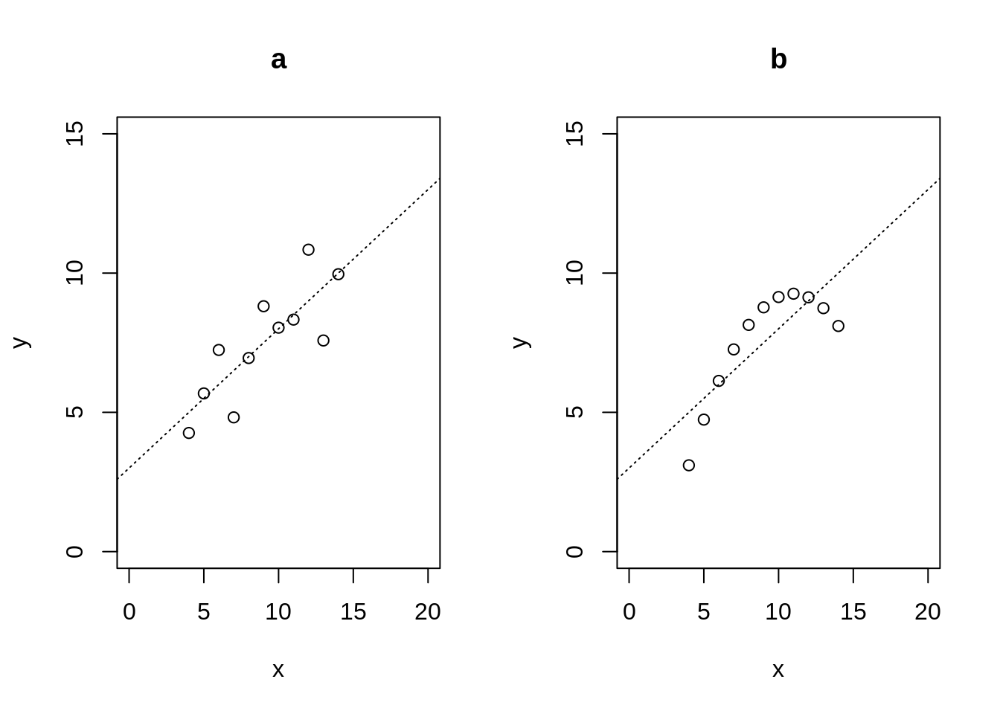
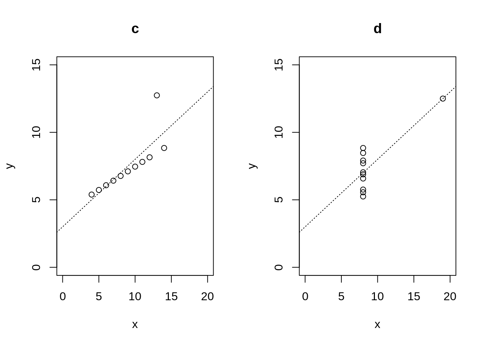

6 Nonlinear and nonparametric models
In the last part of the module we discuss methods that go beyond the linear methods prevalent in classical multivariate statistics.
Relevant textbooks:
The lectures for much of this part of the module follow selected chapters from the following three text books:
James et al. (2013) An introduction to statistical learning with applications in R. Springer.
Hastie, Tibshirani, and Friedman (2009) The elements of statistical learning: data mining, inference, and prediction. Springer.
Rogers and Girolami (2017) A first course in machine learning (2nd edition). CRC Press.
Please study the relevant section and chapters as indicated below in each subsection!
6.1 Limits of linear models and correlation
Linear models are very effective tools. However, it is important to recognise their limits especially when modelling complex nonlinear relationships.
6.1.1 Correlation only measures linear dependence
A very simple demonstration of this is given by the following example. Assume \(x\) is a normal distributed random variable with \(x \sim N(0,1)\). From \(x\) we construct a second random variable \(y = x^2\) — thus \(y\) fully depends on \(x\) with no added extra noise. What is the correlation between \(x\) and \(y\)?
Let’s ansers this question by running a small computer simulation:
## [1] 0.05779854Thus, correlation is (almost) zero even though \(x\) and y$ are full dependent! This is because correlation only measures linear dependence!
6.1.2 Anscombe data sets
Using correlation, and more generally linear models, blindly can thus hide complexities of the analysed data. A furthre classic example for this is demonstrated by the “Anscombe quartet” of data sets (F. J. Anscombe. 1973. Graphs in statistical analysis. The American Statistician 27:17-21, http://dx.doi.org/10.1080/00031305.1973.10478966 ):

As evident from the scatter plots the relationship between the two variables \(x\) and \(y\) is very different in the four cases! Intriguingly, all four data sets share exactly the same linear characteristics and summary statistics:
- Means \(m_x = 9\) and \(m_y = 7.5\)
- Variances \(s^2_x = 11\) and \(s^2_y = 4.13\)
- Correlation \(r = 0.8162\)
- Linear model fit with intercept \(a=3.0\) and slope \(b=0.5\)
Thus, in actual data analysis it is always a good idea to inspect the data visually to get a first impression whether using a linear model makes sense.
In the above only data “a” follows a linear model. Data “b” represents a quadratic relationship. Data “c” is linear but with an outlier that disturbs the linear relationship. Finally data “d” also contains an outlier but also represent a case where \(y\) is (apart from the outlier) is not dependent on \(x\).
In the Worksheet 10 a more recent version of the Anscombe quartet will be analysed in the form of the “datasauRus” dozen - 13 highly nonlinear datasets that all share the same linear characteristics.
6.2 Nonlinear regression models
Traditional linear (and generalised linear) models can been extended to nonlinear settings.
Relevant reading:
Please read: James et al. (2013) Chapter 7 “Moving Beyond Linearity”
Specifically:
- Section 7.1 Polynomial Regression
- Section 7.4 Regression Splines
6.2.1 Scatterplot smoothing
- lowess / loess algorithm
Locally weighted scatterplot smoothing (intended for exploratory analysis, not for probabilistic modelling).
6.2.2 Polynomial regression model
Advantage: - possible to use standard OLS tools to fit model and to do inference (relabeling trick for univariate models)
Disadvantage: - multivariate version complicated and intractable - high-oder polynomials are very erratic - prone to overfitting if degree/order is too high
6.2.3 Piecewise polyomial regression
- simple linear piece-wise model
- basis function approach
- regression splines
- natural splines
See Worksheet 10 for practical application in R!
6.3 Random forests
Another widely used approach for prediction in nonlinear settings is the method of random forests.
Relevant reading:
Please read: James et al. (2013) Chapter 8 “Tree-Based Methods”
Specifically:
- Section 8.1 The Basics of Decision Trees
- Section 8.2.1 Bagging
- Section 8.2.2 Random Forests
6.3.1 Stochastic vs. algorithmic models
Two cultures in statistical modelling: stochastic vs. algorithmic models
Classic discussion paper by Leo Breiman (2001): Statistical modeling: the two cultures. Statistical Science. Vol 16, pages 199-231. https://projecteuclid.org/euclid.ss/1009213726
6.3.2 Random forests
Invented by Breimann in 1996.
Basic idea:
- A single decision tree is unreliable and unstable (weak predictor/classifier).
- Use boostrap to generate multiple decision trees (=“forest”)
- Average over predictions from all tree (=“bagging”, bootstrap aggregation)
The averaging procedure has the effect of variance stabilisation. Intringuingly, averaging across all decision trees dramatically improves the overall prediction accuracy!
The Random Forests approach is an example of an ensemble method (since it is based on using an “ensemble” of trees).
Variations: boosting, XGBoost ( https://xgboost.ai/ )
Random forests will be applied in Worksheet 10.
They are computationally expensive but typically perform very well!
6.3.3 Comparison of decision boundaries: decision tree vs. random forest
Non-nested case:
 Nested case:
Nested case:

Compare also with the decision boundaries for LDA and QDA (previous chapter).
6.4 Gaussian processes
Gaussian processes offer another nonparametric approach to model nonlinear dependencies. They provide a probabilistic model for the unknown nonlinear function.
Relevant reading
Please read: Rogers and Girolami (2017) Chapter 8: Gaussian processes.
6.4.1 Main concepts
- Gaussian processes (GPs) belong the the family of Bayesian nonparametric models
- Idea:
- start with prior over a function (!),
- then condition on observed data to get posterior distribution (again over all functions)
- use an infinitely dimensional multivariate normal distribution as prior
6.4.2 Technical background:
GPs make use of the fact that marginal and conditional distributions of a multivariate normal are also multivariate normal.
Multivariate normal distribution:
\[\boldsymbol z\sim N_d(\boldsymbol \mu, \boldsymbol \Sigma)\]
Assume: \[ \boldsymbol z=\begin{pmatrix} \boldsymbol z_1 \\ \boldsymbol z_2 \\ \end{pmatrix} \] with \[ \boldsymbol \mu=\begin{pmatrix} \boldsymbol \mu_1 \\ \boldsymbol \mu_2 \\ \end{pmatrix} \] and \[ \boldsymbol \Sigma=\begin{pmatrix} \boldsymbol \Sigma_{11} & \boldsymbol \Sigma_{12} \\ \boldsymbol \Sigma_{12}^T & \boldsymbol \Sigma_{22} \\ \end{pmatrix} \] with corresponding dimensions \(d_1\) and \(d_2\) and \(d_1+d_2=d\).
Marginal distributions:
Any subset of \(\boldsymbol z\) is also multivariate normal distributed:
\[ \boldsymbol z_i \sim N_{d_i}(\boldsymbol \mu_i, \boldsymbol \Sigma_{ii}) \]
Conditional multivariate normal:
The conditional distribution is also multivariate normal: \[ \boldsymbol z_i | \boldsymbol z_j = \boldsymbol z_{i | j} \sim N_{d_i}(\boldsymbol \mu_{i|j}, \boldsymbol \Sigma_{i | j}) \] with \[\boldsymbol \mu_{i|j}=\boldsymbol \mu_i + \boldsymbol \Sigma_{ij} \boldsymbol \Sigma_{jj}^{-1} (\boldsymbol z_j -\boldsymbol \mu_j)\] and \[\boldsymbol \Sigma_{i | j}=\boldsymbol \Sigma_{ii} - \boldsymbol \Sigma_{ij} \boldsymbol \Sigma_{jj}^{-1} \boldsymbol \Sigma_{ij}^T\]
\(\boldsymbol z_{i | j}\) and \(\boldsymbol \mu_{i|j}\) have dimension \(d_i \times 1\) and \(\boldsymbol \Sigma_{i | j}\) has dimension \(d_i \times d_i\)
6.4.3 Covariance functions and kernel
The GP prior is a infinitely dimensional multivariate normal with mean zero and the covariance specified by a function:
A widely used covariance function is \[ \text{Cov}(x, x^{\prime}) = \sigma^2 e^{-\frac{ (x-x^{\prime})^2}{2 l^2}} \] This is known as the squared-exponential kernel or Radial-basis function (RBF) kernel.
Note that \((x, x) = \sigma^2\) and the autocorrelation \(\text{Cor}(x, x^{\prime}) = e^{-\frac{ (x-x^{\prime})^2}{2 l^2}}\).
The parameter \(l\) is the length scale parameter and describes the wigglyness or smoothness of the resulting function. Small values of \(l\) mean more complex, more wiggly functions, and low autocorrelation.
There are many other kernel functions, including periodic, polynomial and linear kernels.
6.4.4 GP model
Nonlinear regression in the GP approach is conceptually very simple:
- start with GP prior over all \(x\)
- then condition on the observed \(x_1, \ldots, x_n\)
- the resulting conditional multivariate normal can used to predict the function values at any unobserved values of \(x\)
- automatically provides credible intervals for predictions.
GP regression also provides a direct link with Bayesian linear regression (using a linear kernel).
Drawbacks: computationally expensive (\(n^3\) because of the matrix inversion)
6.5 Neural networks
Another highly important class of models for nonlinear prediction (and nonlinear function approximation) are neural networks.
Relevant reading:
Please read: Hastie, Tibshirani, and Friedman (2009) Chapter 11 “Neural networks”
6.5.1 History
Neural networks are actually relatively old models, going back to the 1950s!
Three phases of neural networks (NN)
- 1950/60: replicating functions of neurons in the brain (perceptron)
- 1980/90: neural networks as universal function approximators
- 2010—today: deep learning
The first phase was biologically inspired, the second phase focused on mathematical properties, and the current phase is pushed forward by advances in computer science and numerical optimisation:
- backpropagation algorithm
- auto-differentiation,
- stochastic gradient descent
- use of GPUs and TPUs,
- availability and devlopment of software packages by major internet companies:
- TensorFlow/Keras (Google),
- MXNet (Amazon),
- PyTorch (Facebook),
- PaddlePaddle (Baidu) etc.
6.5.2 Neural networks
Neural networks are essentially stacked systems of linear regressions, mapping input nodes (random variables) to outputs (response nodes). Each internal layer corresponds to internal latent variables. Each layer is connected with the next layer by non-linear activation functions.
- feedforward single layer NN
- stacked nonlinear multiple regression with hidden variables
- optimise by empirical risk minimisation
It can be shown that NN can approximate any arbitrary non-linear function mapping input and output.
“Deep” neural networks have many layers, and their optimisation requires advanced techniques (see above).
Neural networks are very highly parameterised models and require typically a lot of data for training.
Some of the statistical aspects of NN are not well understood: in particular it is known that NN overfit the data but can still generalise well. On the other hand, it is also know that NN can also be “fooled”, i.e. prediction can be unstable (adversarial examples).
Current statistical research on NN focuses on interpretability and on links with Bayesian inference and models (e.g. GPs). For example:
6.5.3 Learning more about deep learning
A good place to to learn more about deep learning and about the actual implementations in computer code on various platforms is the book “Dive into deep learning” by Zhang et al. (2020) available online at https://d2l.ai/